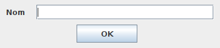

La forma com se situen els components dins d'un contenidor secundari (JPanel), ve determinada pel tipus de layout que s'hi configuri.
Per defecte, la distribució d'una finestra (JFrame) o d'un diàleg (JDialog) és del tipus BorderLayout.
En un contenidor secundari (JPanel), per defecte hi ha configurat un FlowLayout.
Però es poden triar diferents tipus de layout o, fins i tot, eliminar el layout.
Com utilitzar els diferents Layouts
Quan es treballa sense layout, és recomanable fixar la mida del contenidor o finestra i, si és una finestra, evitar que es pugui redimensionar i NO ajustar la mida, excepte si es fixa la mida del contenidor:
// Configurar la finestra amb mida fixa i que no es pugui redimensionar
finestra.setSize(370, 125);
finestra.setResizable(false);
// finestra.pack();
Si es vol distribuir els components en un contenidor de forma arbitrària, s'haurà de configurar un layout nul.
Quan es crea un nou panell, se li ha de passar null com a paràmetre:
// Crear un panell nou sense layout
JPanel panell = new JPanel(null);
Si el contenidor ja existeix (per exemple, el contenidor principal d'un JFrame), s'utilitzarà setLayout(null).
Suposant que finestra és un objecte de tipus JFrame:
// Obtenir el panell principal de la finestra (JFrame) i treure-li el layout
Container panell = finestra.getContentPane();
panell.setLayout(null);
Per afegir components, s'ha de configurar la posició i la mida de cada un amb setBounds(x,y,w,h):
// Crear objecte, configurar posició i mida, i afegir al contenidor
JLabel lNom = new JLabel("Nom");
lNom.setBounds(10, 10, 50, 25); // x, y, amplada, alçada
panell.add(lNom);
JTextField tfNom = new JTextField();
tfNom.setBounds(60, 10, 300, 25);
panell.add(tfNom);
JButton bOk = new JButton("OK");
bOk.setBounds(130, 45, 100, 30);
panell.add(bOk);

L'avantatge de configurar la posició i la mida dels components, és que no canviarà l'aspecte encara que canviï la mida del contenidor o de la finestra.
No tots els tipus de layout permeten això!
Només en casos molt concrets pot ser necessari treballar sense layouts.
Situar i dimensionar els components manualment pot donar molta feina!